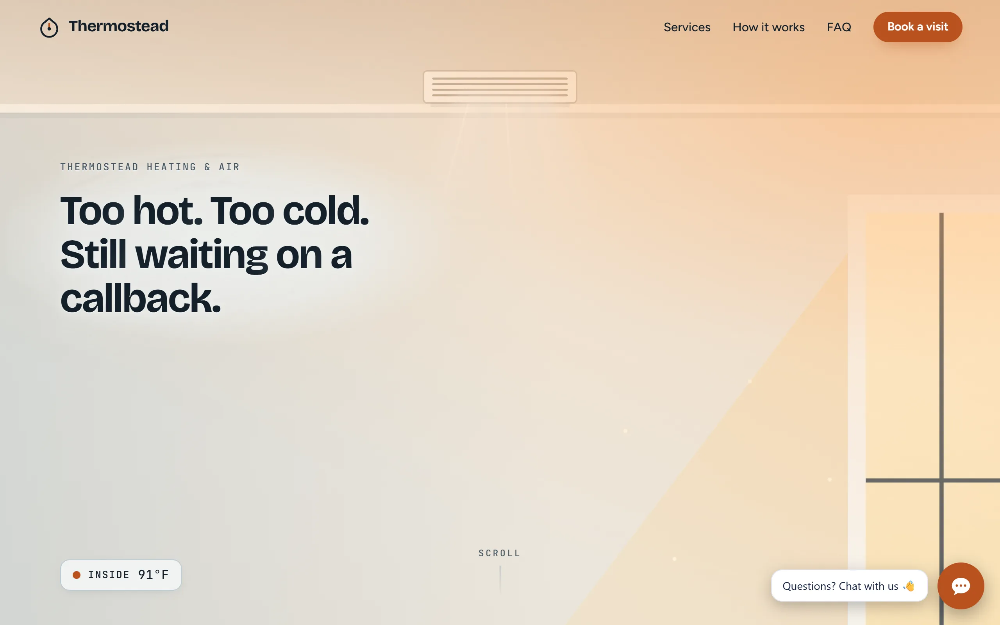
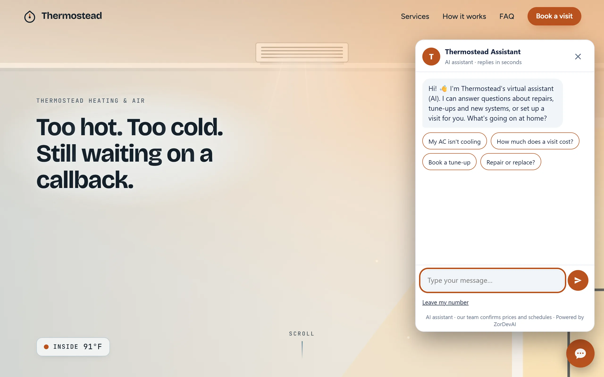
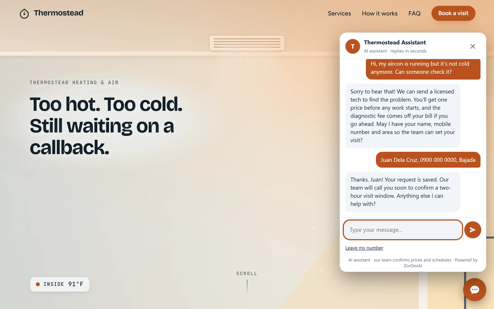
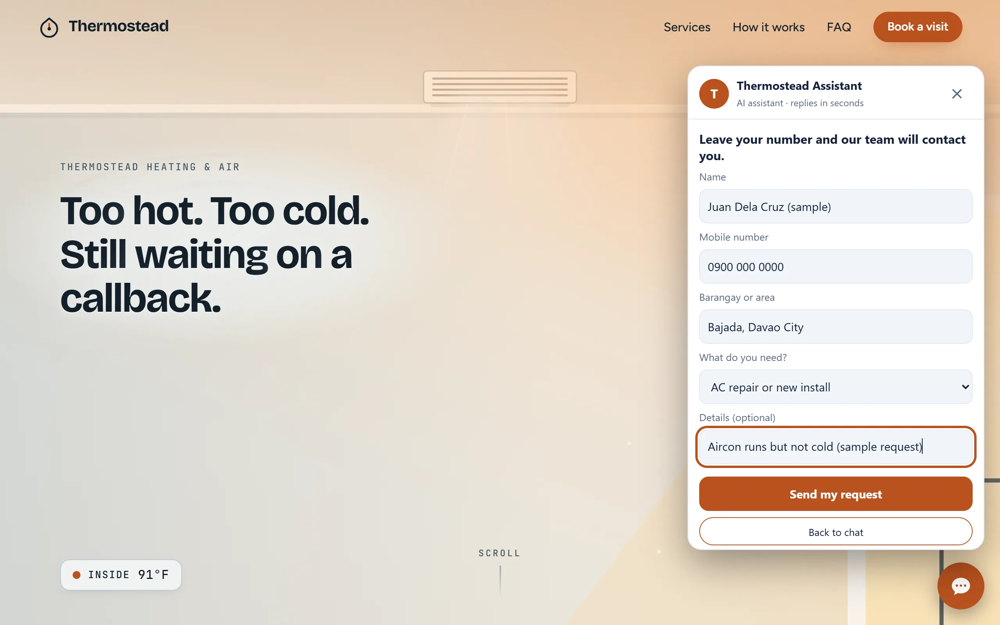
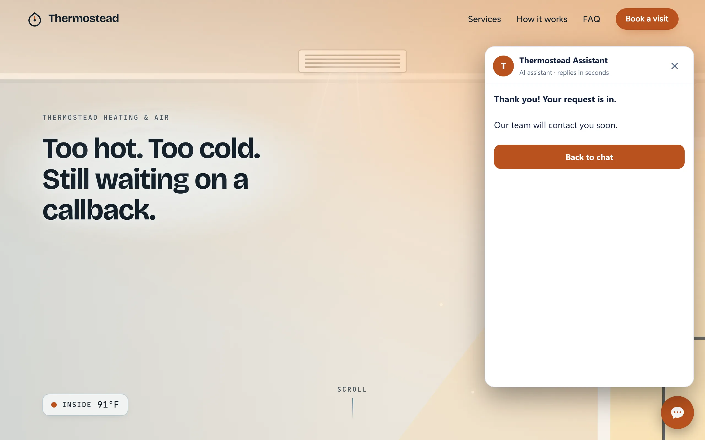
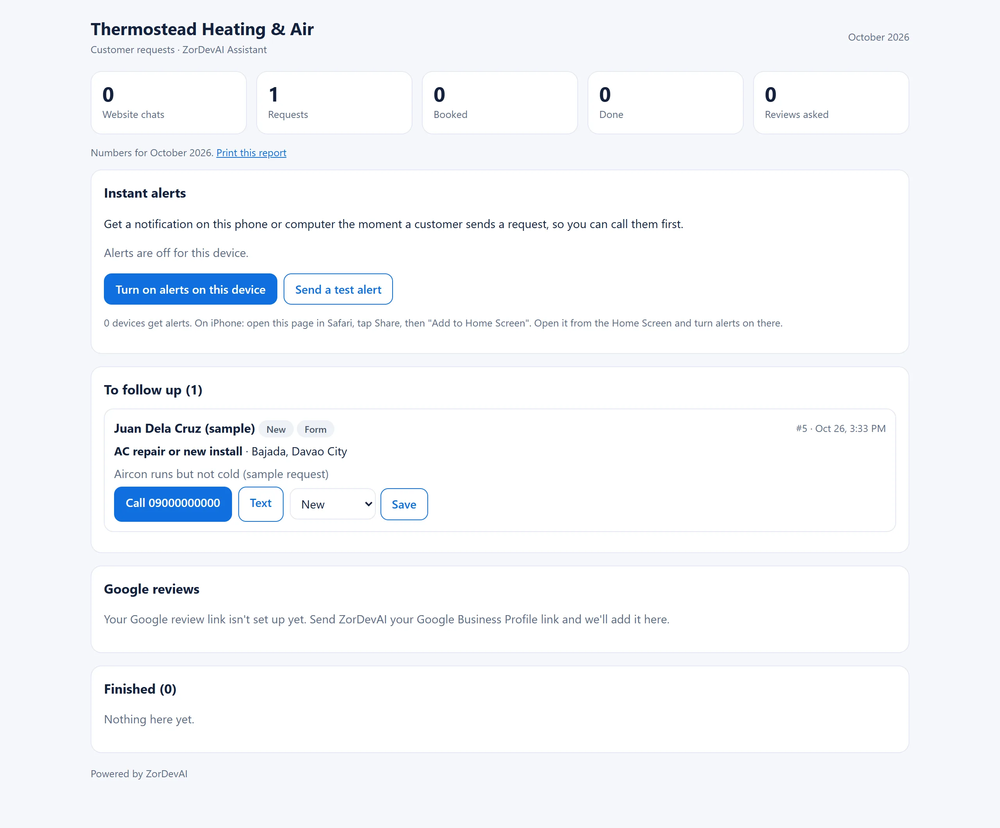
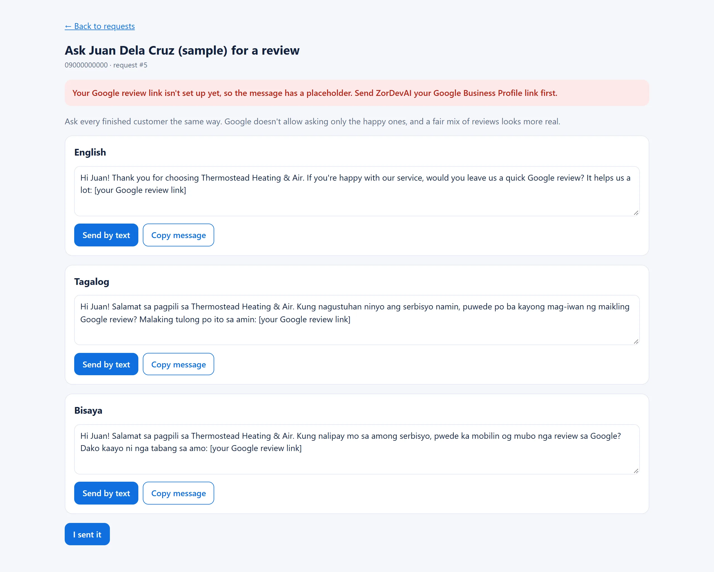
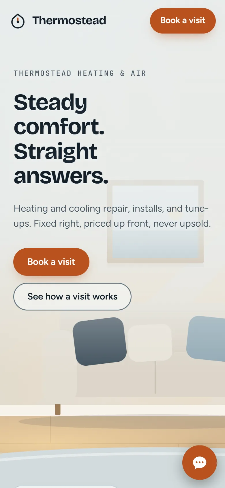
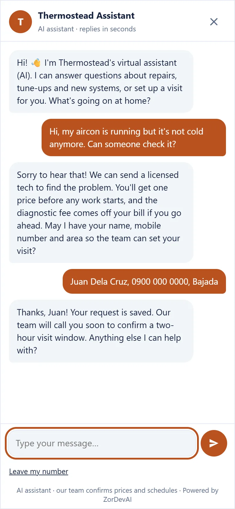
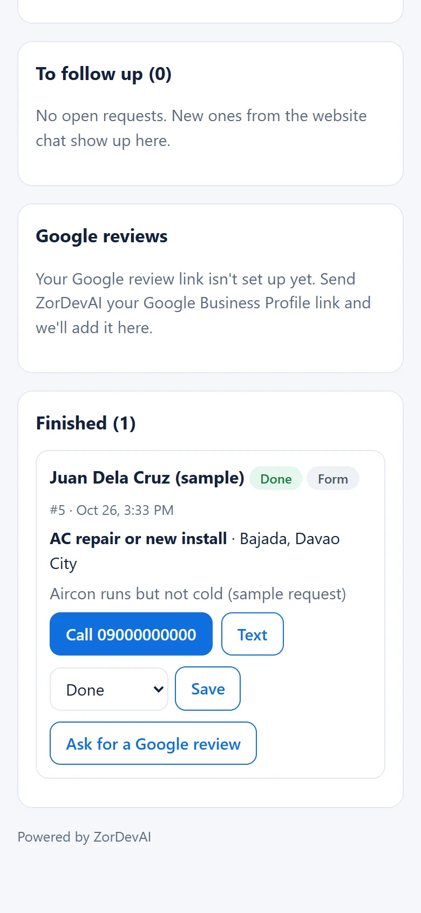

ZorDevAI Assistant
Here's exactly what your customers see on your website, and what you get as the owner, step by step. Tap a numbered marker or a note to see what it points to.
These screenshots come from a demo with a made-up business, Thermostead Heating & Air. On your website, it uses your shop's name, colors, services and prices.
Step 1 · Your website
Your customers visit your website as usual. In the corner, there's a chat bubble in your brand color.

Always in the corner of every page, on computers and phones.
After a few seconds, a small message invites visitors to ask a question.
Step 2 · The customer opens the chat
One tap opens the chat. It greets the customer in your words and offers quick questions they can tap.

Your business name and colors. It says clearly that it's an AI assistant.
It understands English, Tagalog and Bisaya, and answers in the customer's language.
Common questions customers can tap instead of typing.
Customers can also type anything about your services.
For customers who prefer a short form over chatting.
It tells customers that your team confirms prices and schedules.
Step 3 · Questions and booking requests
The AI answers from the facts you give us (services, prices, promos, area). When the customer is ready, it asks for their details and saves the request for your team.

Even at night or while your team is busy on a job.
It never invents prices or promos. If it doesn't know, it says your team will confirm.
It collects the name, mobile number and area, then saves the request and alerts you.
Step 4 · Or a quick form
Some people don't like chatting. The form takes ten seconds.

Who to call back.
Checked to be a real Philippine mobile number.
Your own list of services.
One tap and it's in your dashboard.

The customer knows the request went through.
Step 5 · You get an alert
Turn on alerts once on your phone. Every new request, from the chat or the form, shows up like this, so you can call the customer first, before they ask another shop.
3:29
Thermostead requests · now
New request from Juan
AC repair or new install · Bajada, Davao City
Step 6 · Your dashboard
Open your private dashboard link on your phone or computer. Call, text, and track each customer until the job is done.

Website chats, requests, booked jobs, finished jobs and reviews asked.
Turn them on once per phone. Send a test to check.
The customer's name, what they need, their area and the details they gave.
Straight from your phone.
New, Contacted, Booked, Done. Nothing gets forgotten.
AI chat or the form.
Step 7 · More Google reviews
When a job is done, the dashboard has ready messages in English, Tagalog and Bisaya with your Google review link. More good reviews help you show up higher on Google Maps.

With the customer's name and your Google review link added in.
Opens your phone's messages with everything filled in.
So you know who you've already asked.
On phones
Most of your customers will find you on their phone. So will you, when an alert comes in.

Easy to reach with a thumb.

Close it any time to go back to your website.

The same requests, wherever you are.
In short
Message Zoren Ponce of ZorDevAI. I can make a free sample with your shop's name and services so you can try it first.